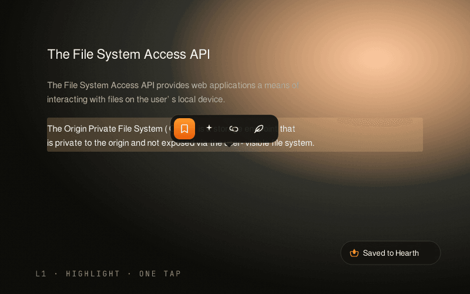
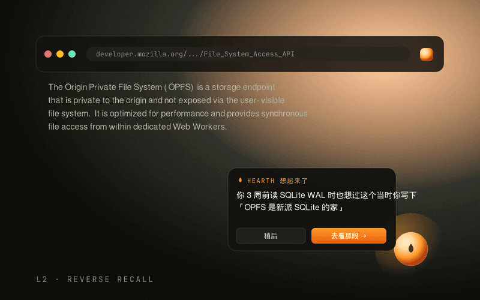
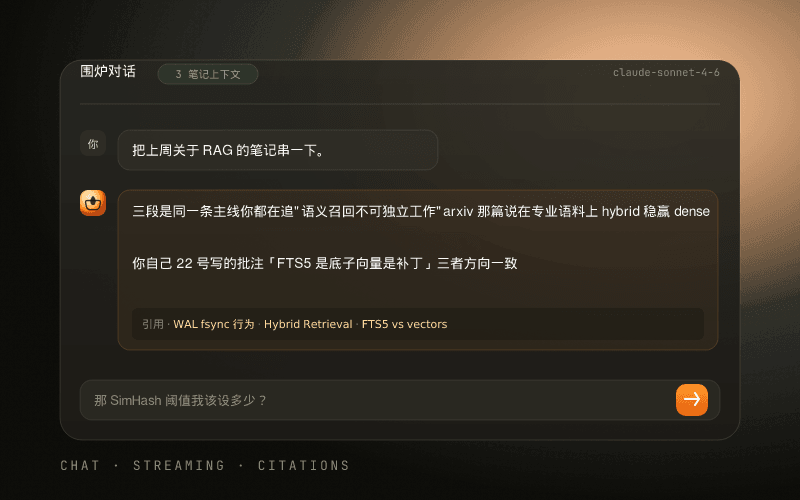

L1 · 选中即收
读到一句想留下的话，
读到一句想留下的话，
选中。就这一下。
浮 bar 出现在选区上方，四个按钮：存 · 问 · 关联 · 想。 一秒按下，浏览继续，无需跳到主界面。
选中 → 存 → 右下角 toast「Saved to Hearth」 → 你接着读下一段。

Hearth 不要你养成新习惯，它寄生在你已有的浏览动作里。
浮 bar 出现在选区上方，四个按钮：存 · 问 · 关联 · 想。 一秒按下，浏览继续，无需跳到主界面。
选中 → 存 → 右下角 toast「Saved to Hearth」 → 你接着读下一段。

打开任意新页面 → Hearth 后台用 FTS5 + SimHash LSH 比对你库内笔记。 一旦命中，角落浮起一团余烬。
不是冷冰冰的"3 条相关" — 是用 LLM 写成有温度的旁白， 还会引用你自己当时的批注。
你 3 周前读 SQLite WAL 时也想过这个，当时你写下「fsync 才是真瓶颈」。

Sidepanel 内对话区，你可以把库里的笔记拖进来当上下文。 LLM 流式回答，附带引用块 — 你说过什么，它能精确指回去。
BYO API key（Anthropic / OpenAI / Ollama）。每次出网都明示同意， 过去 7 天每一次调用在 Settings 里都看得见。

Hearth 占的位置，是已有工具空着的那块：浏览器原生 × 本地优先 × 主动召回。
第二大脑
老牌剪藏
SaaS 阅读
本地 + 主动
从 0 摩擦到 5 分钟回顾，让你在不同心力状态下都有合适入口。
后台默默落到 Inbox。72 小时未确认自动消散，决定权永远在你。
4 按钮：存 · 问 · 关联 · 想。最低摩擦的入库与提问入口。
新页面命中旧笔记时浮起。不是搜索 — 是它主动找你。
上周高亮聚成 3-5 张主题卡。5 分钟刷一遍，删 / 留 / 合并。
三层数据分级、出网三戒、每次调用都审计 — 全部可在 Settings 里逐行查证。
所有笔记存在你这台设备的 OPFS（SQLite WAL）。永远不离开浏览器，除非你按下「问 AI」。
Anthropic / OpenAI / Ollama 三选一，凭据存你本地。Hearth 永不持有，永不上报。
Settings → 过去 7 天云端调用，逐行可看：发了什么、几字节、几毫秒。
Chrome Web Store 上架包准备中。在那之前，三步本地加载即可。
git clone https://github.com/telagod/hearth-ext.git
cd hearth-ext
npm install --legacy-peer-depsnpm run build
# 产物在 dist/，约 5.8 MB访问 chrome://extensions → 开发者模式 → 加载已解压 → 选 dist/
点工具栏图标 → Settings → Provider → 填 API key → 点「我同意」。也可走本地 Ollama。
全程开源，commit 可追溯。下一步：dogfood + Chrome Web Store 提交。